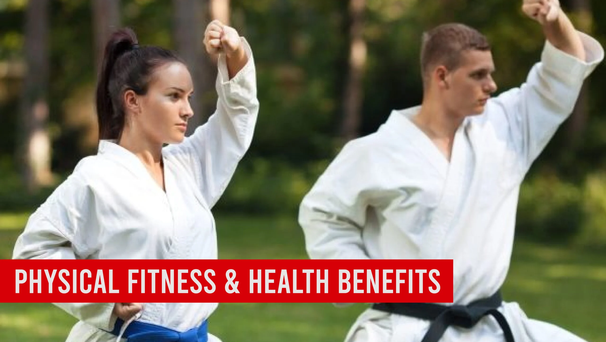
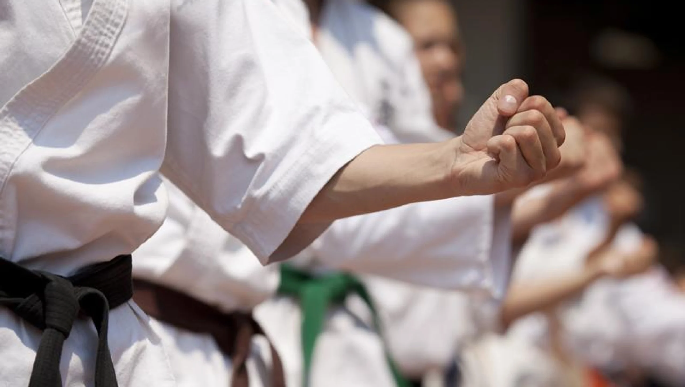
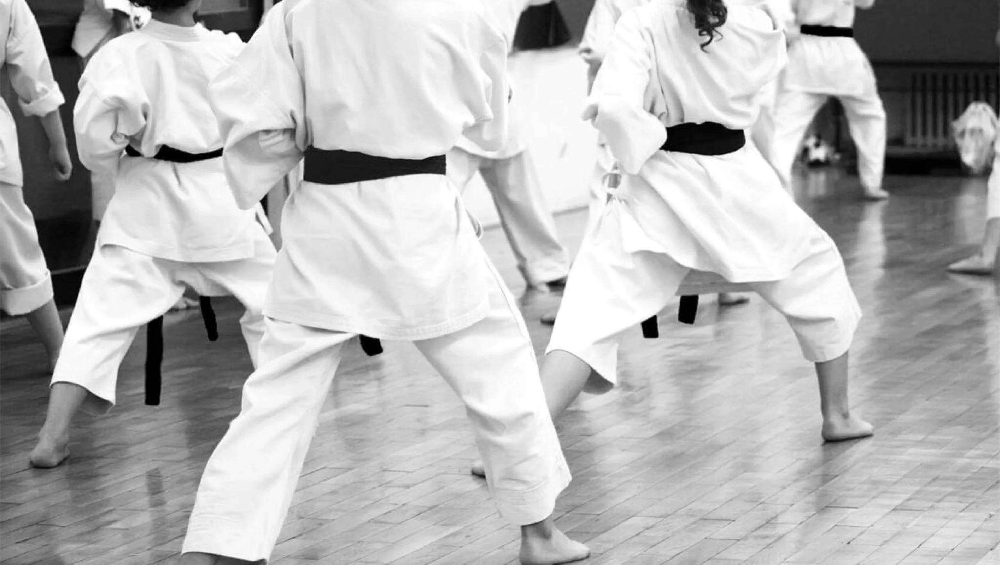

How Martial Arts for Adults Empowers You Today

In recent years, martial arts has gained immense popularity among adults. More and more people are turning to martial arts not just for fitness, but for mental well-being and self-improvement. Whether you’re interested in kickboxing, Brazilian Jiu-Jitsu, Muay Thai, karate, or Krav Maga, martial arts offers a wide range of benefits.
It’s a way to get fit, relieve stress, build confidence, and learn important self-defense skills. Martial arts can truly empower you by improving your physical, mental, and social health.
Martial arts improve physical fitness, including heart health, strength, flexibility, and endurance. They also offer mental health benefits, such as stress relief and increased confidence. Learning self-defense skills enhances personal safety, while martial arts classes foster social connections, creating a supportive community for practitioners.
Physical Fitness and Health Benefits
Martial arts training is a fantastic way to improve your overall physical health. The wide range of movements and techniques involved in martial arts exercises offers numerous benefits, from better cardiovascular health to increased strength, flexibility, and weight management. Below are the key physical fitness benefits of martial arts training:
| Benefit | Details |
|---|---|
| Improved Cardiovascular Health | Martial arts involve continuous movement, such as sparring, kicking, and punching, which elevates your heart rate. This helps improve heart and lung function, leading to better endurance for everyday tasks. |
| Increased Strength, Flexibility, and Endurance | Martial arts exercises target various muscle groups, leading to enhanced overall strength. Techniques such as kicks, punches, and stances build strength, while stretching exercises improve flexibility. Over time, you’ll notice better physical endurance, allowing you to push through longer workouts. |
| Weight Management and Body Composition | Martial arts provide high-intensity workouts that burn calories and promote fat loss. The full-body movements involved also help tone muscles, leading to a leaner body. Training helps regulate metabolism, resulting in better weight management and improved body composition. |
1. Improved Cardiovascular Health
Martial arts like kickboxing, boxing, and Muay Thai are excellent for cardiovascular conditioning. The intensity of the workouts strengthens the heart and increases lung capacity, which has long-term health benefits.
- Heart Health: Regular practice of martial arts helps prevent cardiovascular diseases by improving blood circulation and lowering blood pressure.
- Increased Stamina: Over time, martial arts training increases your stamina, making everyday tasks like walking, climbing stairs, or carrying groceries feel easier.
Studies show that engaging in moderate to intense physical activities, such as those found in martial arts, can reduce the risk of heart disease and stroke (source: American Heart Association). This means that martial arts is a fun and effective way to keep your heart healthy while improving your fitness.
2. Increased Strength, Flexibility, and Endurance
Martial arts training involves movements that engage almost every muscle in the body. Whether you’re practicing boxing, Brazilian Jiu-Jitsu, or karate, these exercises are designed to improve both strength and flexibility.
- Strength: Martial arts routines incorporate strength training through movements like punching, kicking, and grappling. Over time, this leads to increased muscle mass, especially in the arms, legs, and core.
- Flexibility: Many martial arts forms include stretching and mobility exercises that help improve flexibility. Flexibility is not just beneficial for martial arts but also reduces the risk of injury and enhances overall range of motion.
- Endurance: Martial arts training often involves intense bursts of activity, followed by short rest periods. This interval training boosts stamina, helping your body endure longer workouts and stay active for extended periods.
Martial arts not only make you stronger but also improve agility and balance, making it easier to perform daily activities. Your coordination will improve as well, helping you stay injury-free and feel more confident in your body.
3. Weight Management and Body Composition Improvements
Martial arts is an intense physical activity that promotes fat loss and helps you build lean muscle mass. Many martial arts disciplines, such as Muay Thai or Brazilian Jiu-Jitsu, require full-body movement and exertion, which helps burn significant calories.
- Fat Loss: The high-intensity nature of martial arts training burns more calories per minute compared to traditional exercises like running or cycling. A combination of strength training and cardio exercises helps burn fat and build muscle at the same time.
- Muscle Toning: Martial arts involves a wide range of movements that target multiple muscle groups. These exercises tone and sculpt the body, creating a leaner physique over time.
- Metabolism Boost: Martial arts training increases your metabolism, which helps burn fat even after the workout is over. This means your body continues to burn calories for hours after training.
Mental Health and Stress Relief
Martial arts are not only good for your body but also for your mind. They have great mental health benefits.
- Stress reduction through physical activity and mindfulness: Martial arts give you an outlet to release tension. The combination of physical exercise and focus on movements helps reduce stress and clears your mind.
- Enhanced focus and mental clarity: Martial arts require you to concentrate on techniques and movements. This helps improve your mental focus, making it easier to think clearly and make decisions in everyday life.
- Development of discipline and self-control: The structure of martial arts training teaches discipline. By setting goals and achieving them, you develop patience and self-control, which can help in many other areas of life.
Building Self-Confidence and Self-Esteem through Martial Arts
Martial arts is not only a method of physical conditioning but also a transformative practice that significantly enhances mental well-being. One of the most profound benefits of martial arts is its ability to build self-confidence and self-esteem. This is achieved through a structured progression system, constant challenge, and supportive environments that together foster personal growth. Whether practicing kickboxing, karate, Brazilian Jiu-Jitsu, or another form of martial art, adults can experience significant improvements in self-esteem as they achieve new milestones and overcome personal challenges.

Achievement of Personal Goals and Milestones
As you progress in martial arts, you’ll encounter various personal goals—such as mastering techniques, earning belts, or improving your fitness levels—that serve as tangible markers of success. These achievements provide a powerful sense of accomplishment and significantly boost self-confidence. Martial arts provide clear benchmarks for progress, making it easy to track improvement and feel a sense of pride in what you’ve accomplished.
Progressing through martial arts is not only about achieving new ranks but also about mastering new skills. Whether you’re perfecting a kickboxing combo or advancing in Brazilian Jiu-Jitsu techniques, each milestone builds your confidence. The personal growth that comes with reaching these milestones fosters a belief in your ability to achieve anything you set your mind to.
Overcoming Challenges and Building Resilience
Martial arts training is inherently challenging, and this is where the real growth happens. Whether it’s struggling with a particular move or learning how to handle difficult situations in sparring, martial arts continuously presents challenges that require perseverance. Overcoming these obstacles helps build resilience, teaching you to face difficulties head-on and never give up.
This mental toughness developed through martial arts directly contributes to higher self-esteem. With each challenge faced and overcome—whether it’s learning a new technique or improving strength and endurance—you build resilience. The resilience learned through martial arts has lasting effects, helping you approach life’s challenges with greater confidence.
Positive Reinforcement from Instructors and Peers
Another key aspect of martial arts that contributes to increased self-esteem is the supportive environment in which training occurs. Instructors and peers alike offer positive reinforcement that helps build confidence. Martial arts schools often foster a sense of community where practitioners encourage each other’s progress. This sense of belonging can be incredibly uplifting, as you realize that you are part of a group that values and supports your growth.
| Type of Reinforcement | Impact on Self-Esteem |
|---|---|
| Praise from Instructors | Recognition of improvements boosts belief in your abilities and encourages continued effort. |
| Encouragement from Peers | Positive feedback from fellow practitioners creates a sense of camaraderie, increasing self-confidence. |
| Constructive Feedback | Guidance from instructors helps you improve, making you feel more competent and capable. |
| Celebration of Achievements | Acknowledging milestones (e.g., belt progression or mastering techniques) reinforces feelings of success. |
| Supportive Training Environment | Training with like-minded individuals fosters a sense of belonging and motivation to continue advancing. |
Self-Defense Skills and Personal Safety
One of the main reasons people choose martial arts for adults is to learn self-defense, gaining valuable skills to stay safe in any situation.

- Basic self-defense moves applicable in real-life situations: Martial arts classes teach practical self-defense techniques, like how to defend against grabs or punches. These moves can help you stay safe in potentially dangerous situations.
- Increased awareness of surroundings and potential threats: Martial arts training emphasizes situational awareness. This means you become more aware of your surroundings and can spot potential threats more easily.
- Empowerment through the ability to protect yourself and others: Knowing martial arts gives you the confidence to protect yourself and your loved ones. This sense of empowerment is a huge benefit of training.
Social Interaction and Community Building
Martial arts classes offer a great opportunity to meet individuals who share similar interests and goals. This creates a sense of camaraderie, fostering friendships built on mutual respect and a shared commitment to training.
Training often involves partnering with others for drills or sparring, which enhances communication and teamwork skills. These interactions help you build valuable social skills while also improving your martial arts techniques.
The supportive environment in martial arts schools encourages everyone to strive for personal growth. With instructors and peers offering motivation and positive reinforcement, you’ll feel a strong sense of belonging, making the learning process both enjoyable and inspiring.
Discipline and Goal Setting
Martial arts training is a powerful tool for developing discipline, primarily through the process of setting and achieving goals. One key element is the structured progression system, where practitioners earn belts or skill levels as they advance. This system provides clear goals, motivating individuals to keep improving and strive for new achievements.
Regular practice is essential in martial arts, and this commitment helps build discipline. By adhering to a consistent training schedule, practitioners learn the importance of persistence and focus, which translates into personal growth both inside and outside the dojo.
The goal-setting skills learned in martial arts extend beyond training. Whether in career, health, or personal development, the ability to set, pursue, and achieve goals is a valuable skill that can enhance various aspects of life, making martial arts not just a physical practice but a tool for overall growth.
Cultural Appreciation and Lifelong Learning
Martial arts not only improve your physical and mental well-being but also provide valuable insights into different cultures, traditions, and philosophies. Here’s a breakdown of how martial arts foster cultural appreciation and lifelong learning:
| Aspect | Impact |
|---|---|
| Exposure to History and Philosophy | Learning about the history, culture, and philosophy behind martial arts deepens respect and understanding for the tradition. |
| Learning Traditional Forms and Techniques | Studying centuries-old forms and techniques helps develop a greater appreciation for the art itself and its cultural significance. |
| Encouragement of Curiosity and Open-Mindedness | Martial arts promote lifelong learning by continuously introducing new techniques and strategies that challenge the mind and broaden knowledge. |
Conclusion
Martial arts for adults offers numerous benefits, from improving fitness and self-defense skills to boosting confidence and mental discipline. The physical, mental, and social benefits of martial arts training make it an empowering choice for personal growth. Whether you are a beginner or more experienced, martial arts is accessible to adults of all fitness levels and backgrounds. It’s an excellent way to improve your life, achieve your goals, and become part of a supportive community.
FAQ's
The best martial art for beginners depends on personal goals and preferences. Brazilian Jiu-Jitsu (BJJ) is favored for its focus on technique, making it accessible for all. Karate is also a strong choice, emphasizing basic movements and self-discipline. It’s beneficial for beginners to try different classes to find what suits them best.
There is no age limit for starting martial arts! People of all ages can benefit from training. Many schools offer adult classes that cater to newcomers, allowing them to learn at their own pace and enjoy the physical and mental benefits of martial arts.
The cost of martial arts training varies by school, location, and class types. Many schools offer flexible pricing, including monthly memberships or per-class fees. It’s wise to explore different options to find a budget-friendly school that meets your needs.
Participation costs typically range from $100 to $150 per month for memberships, with per-class rates between $15 and $30. Annual memberships may be available for $800 to $1,200, often providing savings. Additionally, consider any extra fees for uniforms and equipment.
For your first day, wear comfortable athletic clothing. Most schools will provide a uniform (like a gi) for you to wear once you enroll, but you want to be ready to move in whatever you choose! Just check with the school beforehand to see if they have any specific requirements.
The time it takes to earn a belt varies widely based on the martial art and your dedication. Generally, it can range from 3 months to several years. Factors influencing this timeline include attendance, effort, and the specific belt progression system of the style you are learning.
Absolutely! Martial arts classes are intended for all fitness levels. Many schools offer beginner programs that help you gradually build your strength and flexibility, so don’t worry if you’re starting from scratch!
Train with us in Coppell
The first class is free. Shorts, a t-shirt and a water bottle. We lend the rest.
Book a free class